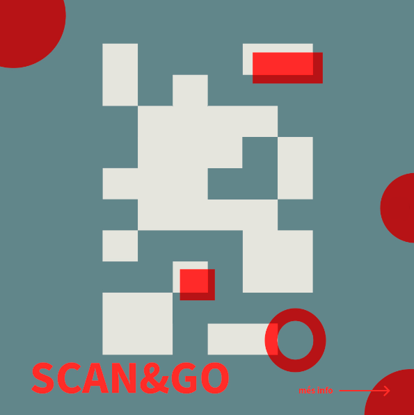

Imágenes publicitarias festival LAVS


Scan&Go Arcade es una instalación interactiva basada en un videojuego para un solo jugador, centrado en la rapidez y la precisión. El objetivo es seleccionar las burbujas que aparecen en pantalla para acumular el máximo de puntos posibles en un tiempo limitado. Al finalizar la partida, el jugador puede guardar su puntuación introduciendo su nombre en una tabla de clasificación, lo que fomenta la competitividad y la rejugabilidad entre los asistentes.
El sistema se apoya en un sensor de detección de movimiento que reconoce la presencia de personas frente a la pantalla y sigue el movimiento de la mano derecha del jugador. Ese gesto se traduce en un cursor que replica sus acciones dentro del juego. Para navegar por los menús y seleccionar opciones no es necesario hacer clic: basta con mantener el cursor unos segundos sobre cada botón para activar la acción correspondiente, lo que facilita la interacción incluso a usuarios no familiarizados con videojuegos.
El juego ha sido desarrollado con Processing, una herramienta de código abierto orientada a la creación de proyectos interactivos y visualizaciones gráficas mediante Java. El proceso incluyó la conceptualización del juego, la definición de mecánicas, la creación de bocetos, storyboard y máquinas de estado, así como la implementación en código, la integración del sistema de detección de movimiento y varias rondas de pruebas y corrección de errores hasta obtener una versión estable para exhibición.
La instalación fue presentada ante un tribunal y seleccionada para formar parte de la exposición «LAVS: Laboratori d’art visual i sonor», celebrada del 21 al 30 de abril de 2023 en la antigua prisión de Mataró. Durante el festival, el proyecto funcionó como instalación abierta al público, permitiendo a los asistentes experimentar el sistema, jugar varias partidas y competir por las primeras posiciones en la tabla de clasificación, convirtiéndose en un punto lúdico y participativo dentro del recorrido expositivo.